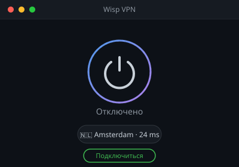
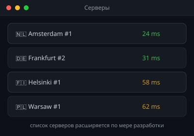
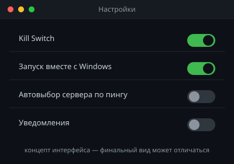

🚧 Проект в активной разработке
Приватный интернет,
бесплатно и открыто
Wisp VPN — бесплатный VPN-клиент для Windows. Без логов, без ограничений трафика, без скрытых платежей.


Wisp VPN — бесплатный VPN-клиент для Windows. Без логов, без ограничений трафика, без скрытых платежей.
Всё необходимое для быстрого и приватного подключения.
Современный, быстрый и хорошо аудированный протокол шифрования вместо тяжёлых legacy-решений.
Не собираем и не храним логи активности пользователей. Политика зафиксирована в SECURITY.md.
Никаких лимитов по объёму данных или искусственного троттлинга скорости.
Автоматическая блокировка трафика при внезапном обрыве VPN-туннеля, чтобы не «утёк» реальный IP.
Нативный клиент с простым установщиком — без сторонних лаунчеров и лишних зависимостей.
Минимум кликов от запуска приложения до защищённого соединения.
Концепт-макеты экранов приложения. Финальный дизайн может отличаться по мере разработки.



Три шага от скачивания до защищённого подключения.
Возьмите последнюю сборку на странице Releases — без регистрации и SMS.
Отметьте ближайшую локацию по пингу или доверьтесь автовыбору.
Туннель WireGuard поднимется автоматически, трафик защищён.
Сборки публикуются в разделе Releases репозитория.
Windows 10/11 · установщик .exe/.msi · без рекламы и телеметрии